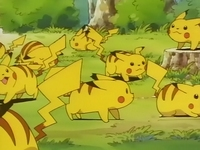
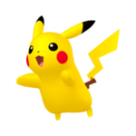
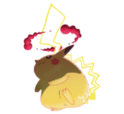

Pikachu es un Pokémon de tipo eléctrico introducido en la primera generación. Es el Pokémon más conocido de la historia, mayormente por ser el acompañante del protagonista del anime, Ash Ketchum y la mascota representante de la franquicia Pokémon. Es el Pokémon inicial que usan los entrenadores que empiezan su aventura en la región de Kanto en Pokémon Amarillo y Pokémon: Let's Go, Pikachu!. A partir de la segunda generación es la evolución de Pichu.
Pikachu es un pequeño Pokémon cuya morfología se encuentra basada en un roedor. Aunque su nombre y su categoría hagan alusión a un ratón, según su diseñadora, sus mejillas están basadas en una ardilla. Su cuerpo es de color amarillo con dos rayas marrones en su espalda y en la base de la cola. La punta de sus orejas de color negro, y presenta un gran círculo rojo en cada una de sus mejillas. Tiene una cola con forma de rayo si es macho y en forma de corazón si es hembra.
Pikachu almacena una gran cantidad de electricidad en las bolsas que tiene en sus mejillas. Estas parecen cargarse eléctricamente durante la noche mientras duerme. Las mejillas de Pikachu también pueden ser recargadas mediante una descarga eléctrica dada por otro Pikachu o a veces suelta unas pequeñas descargas cuando se acaba de despertar. Es un Pokémon muy curioso por lo que puede ver cerca de asentamientos humanos
El hábitat principal de Pikachu es el bosque, alejado de las poblaciones humanas, donde puede encontrar bayas las cuales tuesta con su electricidad, por lo que si se encuentra una baya chamuscada tirada en el suelo, es muy probable que haya sido obra de Pikachu. Gusta de vivir en grupos donde siempre mantienen la cola en alto para vigilar, en esta pose puede ser fácilmente alcanzado por algún rayo, si se siente amenazado o es molestado liberará toda la electricidad almacenada. La energía liberada de varios individuos juntos es capaz de generar tormentas eléctricas.

Origen
En una entrevista el 2 de mayo de 2018, se revela que Pikachu fue concebido inicialmente como un daifuku. Atsuko Nishida, diseñadora gráfica que ha participado en el diseño de algunos personajes de otras franquicias, recibió el encargo de diseñar un Pokémon "adorable", de tipo eléctrico y con 2 evoluciones. Su diseño lo hizo directamente en un programa de dibujo en pixels y empezó pensando en un daifuku alargado. Para intentar hacerlo más adorable, le incorporó mejillas de ardilla (quería tener una como mascota), ya que las ardillas acostumbran a guardar comida en sus mofletes, y una cola en forma de rayo por su tipo eléctrico. Los juegos de Game Boy no tenían colores, pero pensando en la Super Game Boy, decidieron usar el color amarillo representando su tipo eléctrico.
No recuerdan el porqué de la terminación -chu del nombre, pero no tenía relación con los ratones cuando pensaron en el nombre. Sin embargo, otros en el equipo se guiaron por la idea de que era un ratón debido a su nombre, y su diseño final terminó siendo el de un ratón.
Debido a que Atsuko Nishida quedó entusiasmada con su propia creación, quería que fuese algo "exclusivo" que pocos jugadores pudieran tener, y por eso su ratio de aparición en los juegos fue muy bajo, aunque eso hizo que más gente deseara tenerlo
Inicialmente iba a tener 2 evoluciones: Pikachu, Raichu y Gorochu, pero esta última evolución se descartó para conservar el equilibrio en la jugabilidad frente a otros Pokémon.
Diferencia de sexo
Las hembras tienen un corte triangular al final de la cola, lo que le da forma similar a un corazón.
En los machos, el final de la cola es recto.

Pikachu Gigamax
Mediante el fenómeno Gigamax, algunos Pikachu especiales son capaces de transformarse durante los combates en Pikachu Gigamax.
Pikachu Gigamax se ha vuelto tan poderoso que puede producir tanta energía como una central eléctrica. Pero usar toda esa energía para abastecer los hogares de Galar no parece viable, pues Pikachu solo puede gigamaxizarse durante un tiempo limitado. Almacena en la cola toda la electricidad que genera en las bolsas de las mejillas. En los combates golpea a sus rivales con la cola y les propicia una descarga eléctrica con la potencia de un rayo.
Todos los movimientos de tipo eléctrico usados por Pikachu Gigamax se transformarán en el movimiento gigatronada, que causa daño a un oponente y paraliza a todos los Pokémon rivales.
La apariencia Gigamax de Pikachu se asemeja considerablemente a la que tenia en las ilustraciones de los videojuegos originales

Comida Favorita
Pikachu comiendo ketchup
Pikachu Sonido
The Pokemon Company:
The Pokémon Company es una compañía japonesa creada para controlar el merchandising y las licencias de los productos de la franquicia Pokémon.